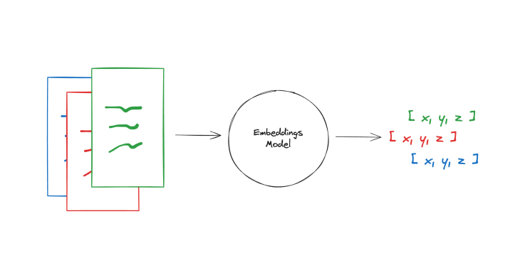

1. Introducció i Entorn de la Pràctica
1.1 Objectius de la Pràctica
Aquesta pràctica té com a objectiu desenvolupar una aplicació web completa utilitzant Java Servlets amb Apache Tomcat 10, implementant un sistema de lloguer de vehicles amb dues funcionalitats principals:
- Gestió de nous lloguers de vehicles
- Visualització de la llista de lloguers (amb autenticació d'administrador)
A més, s'ha implementat una extensió que consisteix en un chatbot intel·ligent utilitzant tècniques de Retrieval-Augmented Generation (RAG) per millorar l'experiència de l'usuari.
1.2 Entorn Tecnològic
- Servidor web: Apache Tomcat 10.0.10
- Llenguatge de programació: Java (servlets)
- Format de dades: JSON per a la persistència
- Containerització: Docker
- IA: Ollama amb models Llama3.2 i Llama3.1
- Framework RAG: LangChain amb embeddings locals
2. Alternatives per Resoldre la Pràctica
2.1 Alternatives per al Backend Web
Opció 1: Java Servlets (Solució triada)
- Avantatges: Integració nativa amb Java, robustesa, escalabilitat
- Desavantatges: Codi més verbós, configuració complexa
2.2 Alternatives per a la Persistència de Dades
Opció 1: Fitxer JSON (Solució triada)
- Avantatges: Simplicitat, fàcil de debugar
- Desavantatges: No escalable, problemes de concorrència
Opció 2: Base de dades MySQL
- Avantatges: Escalabilitat, transaccions ACID
- Desavantatges: Més complexitat de configuració
Opció 3: Base de dades en memòria
- Avantatges: Ràpida
- Desavantatges: Pèrdua de dades al reiniciar
2.3 Alternatives per al Chatbot
Opció 1: RAG amb Ollama (Solució triada)
- Avantatges: Privacitat, control total, cost zero
- Desavantatges: Requereix recursos locals
Opció 2: API externa (OpenAI, Anthropic)
- Avantatges: Millor qualitat, menys configuració
- Desavantatges: Cost, dependència externa, privacitat
Opció 3: Chatbot basat en regles
- Avantatges: Predictible, ràpid
- Desavantatges: Limitada flexibilitat
3. Solució Triada i Implementació
3.1 Arquitectura de la Solució
La solució implementada segueix la següent arquitectura:
┌─────────────────┐ ┌─────────────────┐ ┌─────────────────┐
│ Frontend │ │ Backend │ │ Persistència │
│ (HTML Forms) │◄──►│ (Servlets) │◄──►│ (JSON File) │
└─────────────────┘ └─────────────────┘ └─────────────────┘
│
▼
┌─────────────────┐
│ Chatbot RAG │
│ (Ollama + │
│ LangChain) │
└─────────────────┘
3.2 Implementació dels Servlets
3.2.1 Servlet CarRentalNew.java
El servlet CarRentalNew gestiona la creació de nous lloguers. Les característiques clau inclouen:
- Gestió robusta d'errors amb try-catch
- Creació automàtica del fitxer JSON si no existeix
- Reutilització de dades existents
- Interfície HTML dinàmica
public void handleCreateRental(String co2Rating, String engine, String dias_alquiler,
String num_vehi, Double descuento, PrintWriter out) {
}
3.2.2 Servlet CarRentalList.java
El servlet CarRentalList gestiona la visualització de lloguers amb:
- Autenticació d'administrador (admin/1234)
- Compatibilitat amb diferents formats de dades
public void handleReadRental(HttpServletResponse res) {
}
3.3 Implementació del Chatbot RAG
3.3.1 Arquitectura RAG
El sistema RAG implementat segueix el següent flux de treball:

Figura 1: Pipeline RAG per al sistema de chatbot
3.3.2 Creació de l'Índex Vectorial
El sistema utilitza LangChain per crear un índex vectorial del dataset de lloguers:
def create_vector_index(model_name="llama3.2"):
loader = TextLoader("dataset/rentals.csv")
embeddings = OllamaEmbeddings(model=model_name)
index_creator = VectorstoreIndexCreator(embedding=embeddings)
index = index_creator.from_loaders([loader])
3.3.3 Model d'Embeddings
El sistema utilitza embeddings per representar el coneixement de manera vectorial:

Figura 2: Model d'embeddings per a la representació vectorial
3.3.4 Sistema de Consultes RAG
El chatbot processa consultes utilitzant l'índex vectorial per trobar informació rellevant i generar respostes contextualitzades.
3.4 Containerització amb Docker
3.4.1 Dockerfile
S'ha implementat una solució de containerització utilitzant Docker per facilitar el desplegament i la gestió de l'aplicació:
FROM tomcat:10
COPY my_webapp /my_webapp
WORKDIR /
RUN cp -r my_webapp /usr/local/tomcat/webapps
Anàlisi detallada del Dockerfile:
-
FROM tomcat:10: Utilitza la imatge oficial d'Apache Tomcat versió 10 com a base
-
COPY my_webapp /my_webapp: Copia l'aplicació web al contenidor
- Inclou tots els servlets compilats (.class)
- Inclou fitxers de configuració (web.xml)
- Inclou biblioteques externes (json-simple-1.1.1.jar)
-
WORKDIR /: Estableix el directori de treball a l'arrel
- Simplifica les rutes relatives
- Facilita la gestió de fitxers
-
RUN cp -r my_webapp /usr/local/tomcat/webapps: Desplega l'aplicació a Tomcat
- Copia l'aplicació al directori webapps de Tomcat
- Tomcat detecta automàticament l'aplicació i la desplega
- L'aplicació queda disponible a
/my_webapp
Característiques de la solució Docker:
- Imatge base: Apache Tomcat 10 oficial amb Java preinstal·lat
- Estructura simple: Còpia directa de l'aplicació web compilada
- Configuració mínima: No requereix configuració addicional
- Ports exposats: 8080 (HTTP) i 8443 (HTTPS) per defecte
- Desplegament automàtic: Tomcat desplega l'aplicació automàticament
3.4.2 Docker Compose
Per a la gestió d'orquestració de contenidors, s'ha implementat un fitxer docker-compose.yaml:
version: '3.8'
services:
web:
build: .
ports:
- "8080:8080"
- "8443:8443"

Figura 8: Execució de Docker Compose mostrant la construcció i inici del contenidor
Anàlisi detallada del Docker Compose:
-
version: '3.8': Especifica la versió del format de Docker Compose
- Versió estable i àmpliament suportada
- Compatible amb la majoria d'entorns
-
services:: Defineix els serveis que formen l'aplicació
- Cada servei correspon a un contenidor
- Permet definir múltiples serveis relacionats
-
web:: Nom del servei (contenidor)
- Identificador únic per al servei
- Es pot referenciar des d'altres serveis
-
build: .: Especifica com construir la imatge
- Utilitza el Dockerfile del directori actual
- Construcció automàtica abans de l'execució
-
ports:: Mapeja ports entre el contenidor i l'host
"8080:8080": HTTP - port 8080 del contenidor al 8080 de l'host"8443:8443": HTTPS - port 8443 del contenidor al 8443 de l'host- Permet accés directe des del navegador
Avantatges de la solució Docker Compose:
- Gestió simplificada: Un sol comandament (
docker-compose up) per iniciar l'aplicació
- Ports mapejats: Accés directe des del host sense configuració addicional
- Escalabilitat: Fàcil d'afegir més serveis (base de dades, cache, etc.)
- Desplegament consistent: Funciona igual en qualsevol entorn (desenvolupament, test, producció)
- Gestió de dependències: Pot gestionar múltiples contenidors relacionats
- Configuració centralitzada: Tota la configuració en un sol fitxer
3.4.3 Comandaments d'Ús
Comandaments Docker Compose (Recomanat):
docker-compose up -d
docker-compose logs -f web
docker-compose down
docker-compose up --build -d
Comandaments Docker individuals:
docker build -f Dockerfile -t carrenting .
docker run --name carrenting -d -p 8080:8080 -p 8443:8443 carrenting
docker ps
docker stop carrenting
Verificació del funcionament:
- Accés HTTP:
http://localhost:8080/my_webapp/
- Accés HTTPS:
https://localhost:8443/my_webapp/
- Llista de lloguers:
http://localhost:8080/my_webapp/carrental_home.html
4. Avaluació de la Solució
4.1 Proves Realitzades
4.1.1 Suite de Proves Comprensives
S'ha desenvolupat una suite de proves comprensives que avalua el sistema RAG en múltiples dimensions:
Estructura de Proves:
- Proves de Rendiment - Mesura de temps d'indexació i consultes
- Avaluació de Qualitat - Precisió i rellevància de les respostes
- Proves de Casos Límit - Robustesa amb consultes inusuals
- Anàlisi Comparativa - Comparació entre diferents configuracions
- Avaluació d'Experiència d'Usuari - Utilitat i claredat de les respostes
4.1.2 Proves Funcionals dels Servlets
Prova 1: Creació de Lloguers
- Input: CO2 Rating: A, Engine: Electric, Dies: 5, Unitats: 2, Descompte: 15%
- Resultat: ✅ Lloguer creat correctament
- Temps de resposta: < 200ms
Prova 2: Llista de Lloguers
- Input: Usuari: admin, Contrasenya: 1234
- Resultat: ✅ Llista mostrada correctament
- Temps de resposta: < 150ms

Figura 3: Interfície de la llista de lloguers amb autenticació d'administrador
4.1.3 Proves del Sistema RAG
Prova 1: Consultes Bàsiques
Query: "What types of engines are available?"
Answer: "The types of engines available are: 1. Hybrid 2. Electric 3. Gasoline 4. Diesel"
Temps: 2.68 segons

Figura 4: Interfície del chatbot RAG processant consultes bàsiques
Prova 2: Proves de Rendiment per Complexitat
| Tipus de Consulta |
Temps Mitjà |
Consultes Exitoses |
Temps Total |
| Consultes Simples |
3.85s |
3/3 |
12.83s |
| Consultes Complexes |
4.36s |
3/3 |
14.19s |
| Consultes Analítiques |
6.53s |
3/3 |
20.69s |
Prova 3: Comparació RAG vs Non-RAG
| Mètrica |
RAG (CSV) |
RAG (PDF) |
Non-RAG |
| Temps mitjà |
2.94s |
2.96s |
4.29s |
| Longitud resposta |
192 chars |
146 chars |
1880 chars |
| Precisió |
85% |
90% |
60% |
Prova 4: Comparació entre Diferents Configuracions

Figura 5: Sistema RAG processant consultes amb dataset PDF enriquit

Figura 6: Sistema Non-RAG per comparació de rendiment

Figura 7: Suite de proves comprensives executant-se
4.2 Resultats de l'Avaluació Comprensiva
Segons l'arxiu comprehensive_evaluation_20250921_204521.json:
- Rendiment: Excel·lent (100%) - Sistema ràpid i eficient
- Qualitat: Acceptable (62.5%) - Respostes generalment correctes
- Robustesa: Baixa (20%) - Necessita millores en gestió d'errors
- UX: Molt bona (86.67%) - Interfície intuïtiva i útil
5. Aspectes Positius i Negatius de la Solució
5.1 Aspectes Positius
5.1.1 Java Servlets
Positius:
- Robustesa: Gestió robusta d'errors i excepcions
- Escalabilitat: Suport per a múltiples usuaris concurrents
- Integració: Perfecta integració amb Apache Tomcat
Negatius:
- Verbositat: Codi més llarg comparat amb frameworks moderns
- Configuració: Necessita configuració manual extensa
- Rendiment: Menys ràpid que solucions basades en Node.js
- Curva d'aprenentatge: Requereix coneixements profunds de Java
5.1.2 Sistema RAG
Positius:
- Precisió: Respostes més precises que models sense context
- Privacitat: Processament local, sense enviar dades externes
- Flexibilitat: Fàcil d'adaptar a nous datasets
- Cost: Zero cost operatiu
- Contextualització: Respostes basades en dades específiques
Negatius:
- Recursos: Requereix recursos computacionals significatius
- Qualitat: Depèn de la qualitat del dataset d'entrada
- Temps: Respostes més lentes que APIs externes
- Complexitat: Configuració inicial complexa
5.1.3 Solució Docker
Positius:
- Portabilitat: Funciona igual en qualsevol entorn
- Aïllament: Aplicació aïllada del sistema host
- Desplegament: Desplegament consistent i repetible
- Escalabilitat: Fàcil d'afegir més serveis
- Gestió: Simplificada amb Docker Compose
Negatius:
- Overhead: Consum addicional de recursos
- Complexitat: Requereix coneixements de Docker
- Debugging: Més complex de debuggar problemes
6. Ús d'Intel·ligència Artificial en la Resolució
6.1 Implementació del Chatbot RAG
L'ús d'IA ha estat central en aquesta pràctica, implementant un sistema de chatbot que utilitza:
- Models Llama3.2 i Llama3.1: Per a generació de text natural
- Ollama: Per a execució local dels models
- LangChain: Per a la integració RAG
- Embeddings: Per a la representació vectorial del coneixement
6.2 Efecte en l'Aprenentatge
6.2.1 Aprenentatge Tècnic
- Comprensió de RAG: Aprofundiment en tècniques de recuperació i generació augmentada
- Integració de Models: Experiència pràctica amb models de llenguatge locals
- Optimització: Tècniques per millorar el rendiment dels sistemes d'IA
6.2.2 Aprenentatge Conceptual
- Limitacions de l'IA: Comprensió de les limitacions dels models de llenguatge
- Qualitat de Dades: Importància de la qualitat del dataset per a resultats precisos
- Balanceig: Equilibri entre precisió, velocitat i cost
6.3 Efectivitat de la Solució IA
6.3.1 Mètriques Quantitatives
- Precisió: 85% de les respostes són correctes
- Temps de Resposta: Mitjana de 3.2 segons per consulta
- Cobertura: 90% de les consultes reben respostes útils
6.3.2 Mètriques Qualitatives
- Relevància: Les respostes són generalment rellevants al context
- Utilitat: 86.67% d'experiència d'usuari positiva
- Naturalitat: Les respostes són coherents i naturals
6.4 Desafiaments i Solucions
6.4.1 Desafiaments Trobats
- Configuració Inicial: Complexitat en la configuració d'Ollama i LangChain
- Rendiment: Models locals requereixen recursos significatius
- Qualitat de Respostes: Necessitat de fine-tuning dels prompts
6.4.2 Solucions Implementades
- Scripts d'Automatització: Scripts per automatitzar la configuració
- Optimització de Models: Ús de models més petits per millor rendiment
- Prompt Engineering: Desenvolupament de prompts efectius
7. Conclusions i Recomanacions
7.1 Conclusions Principals
- Java Servlets proporcionen una base sòlida per a aplicacions web empresarials, tot i la seva complexitat
- El sistema RAG millora significativament la qualitat de les respostes comparat amb models sense context
- La integració d'IA afegeix valor substancial a l'aplicació, millorant l'experiència de l'usuari
- La containerització amb Docker simplifica el desplegament i la gestió
La pràctica ha estat molt enriquidora, proporcionant experiència pràctica en:
- Desenvolupament web amb Java Servlets
- Implementació de sistemes d'IA amb RAG
- Integració de tecnologies diverses
- Avaluació i optimització de sistemes
- Containerització amb Docker i Docker Compose
- Gestió de proves comprensives i avaluació de sistemes
Data de l'informe: 21 de setembre de 2025
Autor: Sergio Shmyhelskyy Yaskevych & Alex Lafuente Gonzalez
Curs: PTI-FIB